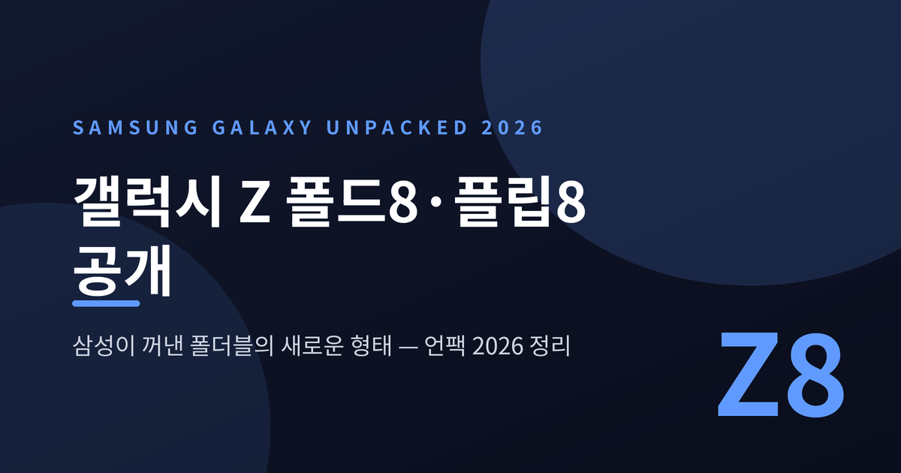
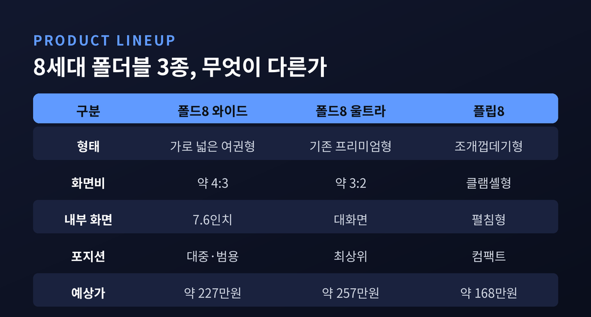
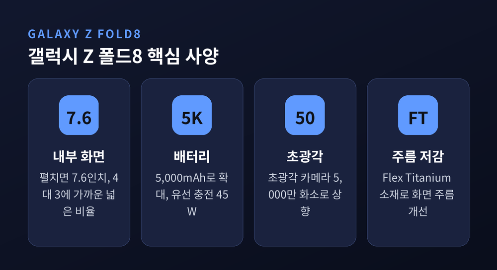
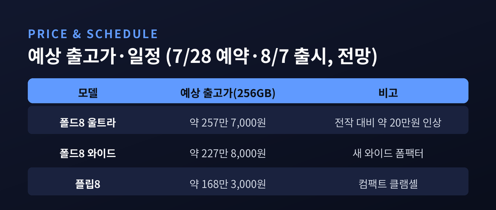
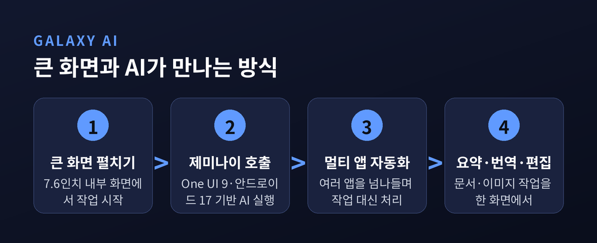
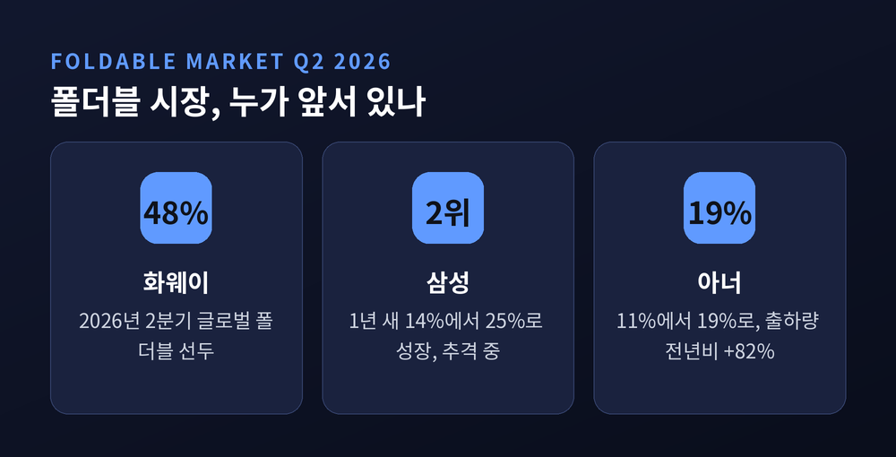

갤럭시 Z 폴드8·플립8 공개, 삼성이 폴더블 '새 형태'를 꺼낸 이유 — 언팩 2026 정리
이번 글에서는 2026년 7월 22일 런던에서 열린 삼성전자 갤럭시 언팩 2026을 정리해 보겠습니다.
행사명은 'A New Shape Unfolds', 우리말로 옮기면 '새로운 형태가 펼쳐진다'입니다.
슬로건 그대로, 이번 발표의 중심에는 폴더블폰의 달라진 생김새가 있습니다.

무슨 일이 있었나
삼성전자가 영국 런던 올드 빌링스게이트에서 갤럭시 언팩 2026을 열었습니다.
공개 대상은 8세대 폴더블 세 종입니다.
가로가 넓어진 새 폼팩터 '갤럭시 Z 폴드8', 최상위 '갤럭시 Z 폴드8 울트라', 그리고 조개껍데기형 '갤럭시 Z 플립8'입니다.
여기에 새 갤럭시 워치와, 삼성의 첫 자체 스마트글라스 '갤럭시 글라스'까지 무대에 올랐습니다.
한 번의 행사에 폰과 시계, 안경이 함께 나온 셈입니다.
가장 큰 변화는 폴드의 형태입니다.
예전 폴드는 세로로 길쭉한 리모컨 모양이었습니다.
지금의 폴드8은 가로 폭을 넓히고 세로를 줄인, 이른바 '여권형'으로 바뀌었습니다.
접었을 때 커버 화면은 5.5인치, 펼쳤을 때 내부 화면은 7.6인치, 펼친 비율은 4대 3에 가깝습니다.

왜 중요한가
폴더블은 나온 지 여러 해가 지났지만, 여전히 '비싼 실험작'이라는 시선을 받아 왔습니다.
화면 주름, 두툼한 두께, 부담스러운 무게가 늘 발목을 잡았습니다.
이번 언팩은 그 약점을 정면으로 겨냥합니다.
삼성은 폴드8 계열에 'Flex Titanium' 소재를 적용해 화면 주름을 줄이려 했다고 알려졌습니다.
배터리도 5,000mAh로 키우고, 유선 충전은 45W로 끌어올렸다는 것이 업계의 관측입니다.
카메라는 초광각 센서를 5,000만 화소로 높였고, 두께와 무게도 손보려 했다고 전해집니다.
작은 개선의 합이지만, 매일 손에 쥐는 물건에서는 그 합이 곧 체감이 됩니다.

무엇보다 삼성은 폴드 라인을 둘로 쪼갰습니다.
기존 3대 2 비율의 프리미엄은 '울트라'로, 새 4대 3 와이드형은 '폴드8'로 나눴습니다.
하나의 폴드를 팔던 방식에서, 용도와 가격대별로 고르게 하는 방식으로 옮겨 간 것입니다.
이 변화는 단순한 크기 조정이 아닙니다.
접었을 때 더 손에 잡히고, 펼쳤을 때 책에 가까운 비율을 주려는 시도입니다.
화면비 4대 3은 전자책과 문서, 웹 페이지를 볼 때 세로 정보를 더 많이 담습니다.
'무엇에 쓰는 화면인가'를 먼저 묻고 형태를 정한 셈이라고 생각합니다.
얼마나 하고 언제 사나
가격은 아직 삼성이 공식 확정하지 않았습니다.
다만 행사 직전 국내에 알려진 예상 출고가는 대략 다음과 같습니다.
폴드8 울트라는 256GB 기준 약 257만 7,000원으로, 전작보다 20만 원가량 오른 것으로 전해집니다.
와이드형 폴드8은 약 227만 8,000원, 플립8은 약 168만 3,000원 선으로 거론됩니다.
미국에서는 폴드8 기본형이 1,999달러부터 시작하고, 최상위 구성은 2,700달러를 넘을 수 있다는 관측도 나옵니다.
일정도 윤곽이 잡혔습니다.
국내 사전예약은 7월 28일부터 8월 3일까지, 정식 출시는 8월 7일로 알려졌습니다.
지난해처럼 256GB를 사면 512GB로 무상 업그레이드해 주는 혜택도 준비된 것으로 전해집니다.

한 가지는 짚어 두겠습니다.
가격과 일정은 발표 전 유출·업계 전망 단계의 숫자입니다.
공식 발표로 조정될 수 있으니, 확정치는 삼성의 공지로 다시 확인하시길 권합니다.
AI 시대의 폴더블, 무엇이 달라지나
이번 세대의 또 다른 축은 인공지능입니다.
폴드8과 플립8은 One UI 9와 안드로이드 17을 바탕으로, 구글 제미나이 기반 AI를 폴더블에 먼저 얹었습니다.
여러 앱을 넘나들며 작업을 대신 처리하는 '멀티 앱 자동화'가 핵심으로 소개됐습니다.
큰 화면은 AI와 잘 맞습니다.
펼친 화면에서 문서를 요약하고, 번역하고, 이미지를 편집하는 일이 한 화면 안에서 이어집니다.
삼성은 폴더블의 넓은 화면을 'AI를 쓰기 좋은 그릇'으로 자리매김하려는 듯합니다.

플립8과 워치, 그리고 첫 스마트글라스
폴드에 가려졌지만, 조연들도 눈여겨볼 만합니다.
갤럭시 Z 플립8은 배터리 4,500mAh에 25W 유선·15W 무선 충전을 갖춘 것으로 전해집니다.
칩은 지역에 따라 갈립니다.
국내와 유럽 일부에는 삼성 자체 칩 엑시노스 2600이, 북미와 중국용에는 퀄컴 스냅드래곤 8 엘리트 5세대가 실린다는 관측입니다.
자사 칩을 다시 앞세운 점은, 부진했던 삼성의 비메모리 반도체 사업과도 맞물려 읽힙니다.
새 갤럭시 워치도 함께 나왔습니다.
상위 모델은 갤럭시 워치 울트라 계열로, 강화된 웨어러블용 칩을 얹은 것으로 알려졌습니다.
가장 눈에 띄는 건 '갤럭시 글라스'입니다.
삼성이 처음 선보이는 자체 스마트글라스로, 구글·퀄컴과 손잡은 안드로이드 XR을 바탕으로 합니다.
아직 완성형이라기보다 방향을 보여 주는 단계에 가깝습니다.
그럼에도 폰 너머의 다음 화면을 삼성이 어디에 둘지, 그 힌트로는 충분합니다.
폴더블 시장, 삼성의 자리는 어디인가
시장 상황은 삼성에 그리 편안하지 않습니다.
2026년 2분기 기준, 글로벌 폴더블 1위는 화웨이입니다.
집계 기관에 따라 화웨이가 약 48%로 선두라는 수치가 나옵니다.
삼성은 2위권입니다.
다만 성장세는 분명합니다.
한 조사에서는 삼성의 점유율이 1년 새 14%에서 25%로 거의 두 배가 됐습니다.
아너 역시 11%에서 19%로 치고 올라오며, 상위 세 곳이 시장의 약 84%를 나눠 갖는 구도입니다.
중국 시장만 떼어 보면 격차는 더 큽니다.
그곳에서 화웨이는 70%대, 삼성은 한 자릿수에 머뭅니다.
여기에 애플의 첫 폴더블 진입까지 예고돼 있습니다.
숫자가 기관마다 다른 점은 감안해야 합니다.
어떤 조사는 특정 분기의 판매만 보고, 다른 조사는 1년간의 흐름을 봅니다.
그래서 삼성의 점유율도 15%로 읽히기도, 25%로 읽히기도 합니다.
다만 큰 그림은 대체로 일치합니다 — 화웨이가 앞서고, 삼성이 뒤를 바짝 좇는 구도입니다.
삼성이 라인업을 넓힌 배경이 여기에 있습니다.
뒤에서는 중국 업체가 물량과 기술로 밀어붙이고, 앞에서는 애플이 시장에 들어섭니다.
방어와 저변 확대를 동시에 노린 포석인 셈입니다.

정리하면 이렇습니다.
이번 언팩은 화려한 신기능 자랑이라기보다, 폴더블의 '형태'와 '값', 그리고 '쓸모'를 다시 짠 자리에 가깝습니다.
넓어진 화면, 줄어든 주름, 나뉜 라인업, 그리고 AI.
갈래는 많지만 방향은 하나로 모입니다.
폴더블을 특별한 물건에서 고를 수 있는 선택지로.
물론 높은 가격과 무게, 중국 시장의 벽은 그대로 남아 있습니다.
그럼에도 폴더블이 어디로 가는지 궁금하셨다면, 이번 폴드8이 그 방향을 가장 또렷하게 보여 준다고 생각합니다.